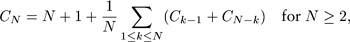
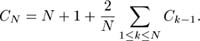
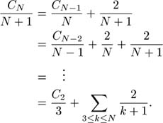
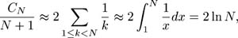

C++ Programming Robert Sedgewick - Princeton University Addison Wesley Professional Algorithms in C++, Parts 1–4: Fundamentals, Data Structure, Sorting, Searching, Third Edition
7.2. Performance Characteristics of Quicksort
Despite its many assets, the basic quicksort program has the definite liability that it is extremely inefficient on some simple files that can arise in practice. For example, if it is called with a file of size N that is already sorted, then all the partitions will be degenerate, and the program will call itself N times, removing just one element for each call.
Property 7.1. Quicksort uses about N2/2 comparisons in the worst case|
By the argument just given, the number of comparisons used for a file that is already in order is
N + (N-1) + (N-2) + . . . +2 +1 = (N+1)N/2:
All the partitions are also degenerate for files in reverse order, as well as for other kinds of files that are less likely to occur in practice (see Exercise 7.6).
|
This behavior means not only that the time required will be about N2/2, but also that the space required to handle the recursion will be about N (see Section 7.3), which is unacceptable for large files. Fortunately, there are relatively easy ways to reduce drastically the likelihood that this worst case will occur in typical applications of the program.
The best case for quicksort is when each partitioning stage divides the file exactly in half. This circumstance would make the number of comparisons used by quicksort satisfy the divide-and-conquer recurrence
The 2CN2 covers the cost of sorting the two subfiles; the N is the cost of examining each element, using one partitioning pointer or the other. From Chapter 5, we know that this recurrence has the solution
CN  N lg N. N lg N.
Although things do not always go this well, it is true that the partition falls in the middle on the average. Taking into account the precise probability of each partition position makes the recurrence more complicated and more difficult to solve, but the final result is similar.
Property 7.2. Quicksort uses about 2N ln N comparisons on the average|
The precise recurrence formula for the number of comparisons used by quicksort for N randomly ordered distinct elements is  |
with C1 = C0 = 0. The N + 1 term covers the cost of comparing the partitioning element with each of the others (two extra for where the pointers cross); the rest comes from the observation that each element k is likely to be the partitioning element with probability 1/ k, after which we are left with random files of size k - 1 and N - k.
Although it looks rather complicated, this recurrence is actually easy to solve, in three steps. First, C0 + C1 + ... + CN–1 is the same as CN–1 + CN–2 + ... + C0, so we have 
Second, we can eliminate the sum by multiplying both sides by N and subtracting the same formula for N - 1:
NCN - (N - 1)CN-1 = N(N + 1) - (N - 1)N + 2CN–1.
This formula simplifies to the recurrence
Third, dividing both sides by N(N + 1) gives a recurrence that telescopes:

This exact answer is nearly equal to a sum that is easily approximated by an integral (see Section 2.3):

which implies the stated result. Note that 2N ln N 1:39N lg N, so the average number of comparisons is only about 39 percent higher than in the best case.
|